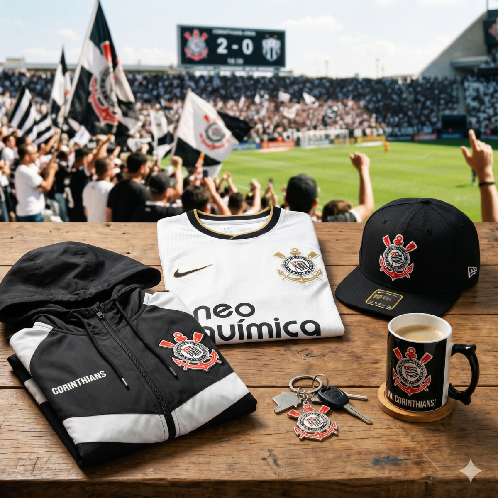

Bem-vindo à Loja Oficial do Corinthians
A Loja Oficial do Sport Club Corinthians Paulista é o destino número um para o torcedor corinthiano que deseja vestir a camisa do Timão com orgulho. Aqui você encontra os produtos oficiais e licenciados do clube mais popular do Brasil.
Nosso sistema administrativo permite o gerenciamento completo de clientes, produtos, vendas, ingressos e sócios do programa Fiel Torcedor. Tudo pensado para oferecer a melhor experiência ao fiel torcedor corinthiano.

Imagem ilustrativa da Loja Oficial
Destaques e Novidades
Confira os lançamentos mais recentes da loja:
- Nova Camisa I 2026 — O manto sagrado em sua versão mais moderna, com detalhes em preto e branco. Edição limitada!
- Camisa II 2026 — A camisa reserva preta com detalhes dourados. Homenagem ao mundial de 2012.
- Moletom Oficial — Peça indispensável para os dias frios na Arena Corinthians.
- Caneca Vai, Corinthians! — Para tomar aquele café antes do jogo. Capacidade: 350ml.
- Boné Aba Reta — Estilo e tradição em um único acessório.

Produtos oficiais disponíveis na loja
Promoção especial: Na compra de 2 camisas oficiais, ganhe 10% de desconto no valor total da compra! Promoção válida enquanto durarem os estoques.